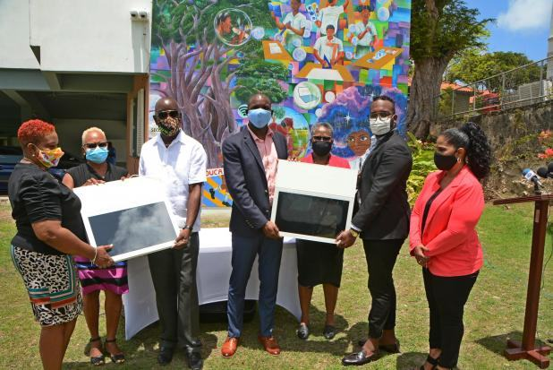

- Left to right: CGI representative Jonathan Jones; Joyann Haigh of Haigh Communications Inc. and Nicole Wiltshire, Group Marketing Manager of PVH Group

- Presentation of devices by Haigh Communication Inc.
The Ministry of Education, Technological and Vocational Training has been armed to make things a bit easier for a few more households in Barbados. With the Google G Suite Tech Drive already underway, devices for the less fortunate students to be kept abreast with online learning are being provided, and close to 100 additional tablets were presented to the Ministry yesterday.
In an open-air ceremony which took place on the lawns of the Constitution Road headquarters, the Rotary Club of Barbados, the PVH Group, and Consumer General Insurance handed over a selection of tablets and Chief Education Officer (Ag.), Joy Adamson said that the Ministry was thankful for the donation at this time.
“This morning we really want to recognise the Rotary Club of Barbados for their donation. To date they have donated 42 devices that we are now receiving. They have promised that they will continue to, as long as they get the devices, continue to supply us with devices so that we can be able to distribute them. We are also grateful to the CGI company and the PVH Group who would have donated 50 devices,” she stated.
With the selection made including Kindle Fires, Alcatel tablets and Logic tablets, Adamson explained that the latter type was necessary for those without access to internet and thanked Digicel Barbados for the role they played in facilitating the needs of those persons.
“The Logics are the tablets that can carry the SIM cards because we are aware that there are some persons who need the internet access and therefore we restrict those Logics to those persons with the SIM cards. We want to thank Digicel for the 5 000 SIM cards that they have donated to the Ministry that we can also use in these tablets.”
With the drive having received 1 060 devices to date from several agencies in the private sector and from individuals, they have distributed over 750 of these devices with the most vulnerable persons identified by the Welfare Department, being catered to first. It was also revealed that Class Four students were also provided with devices and the programme was now on to fifth and sixth formers at secondary schools.
Ministry of Education Permanent Secretary Betty Alleyne-Headley was pleased about the donation and noted that there was still much work to be done to ensure that no child was left behind in Barbados.
“We are extremely grateful and we would wish this Google Tech Drive to continue. We are trying to reach at minimum 6 000 devices, and to date, we are not near what we wish to have donated. At maximum, we do not mind a donation of 10 000, but all those children who are less-fortunate, we are hoping to be able to have a device,” she said.
Rotary Club of Barbados President Elect Fiona Hinds explained that their donation came out of a joint initiative with their junior arm, Rotaract and stated that with the year of her presidency focused on children, the Club recognised the need for a degree of equality at the basic level as equal opportunities are necessary for everyone. She also pledged the Club’s commitment to assisting the Ministry achieve its goals in the online education project.
“This is a continuous project and we hope to be able to continue into the future and help until there is no need. We will serve above self in all avenues of service,” she stated.
Group Marketing Manager of PVH Group Nicole Wiltshire said that her company was pleased to assist this initiative as protecting the island’s level of literacy could only augur well for our society.
“Our way of life and what we consider to be normal has taken an unprecedented shift and to get through this, we must all play our part and lend a helping hand wherever it is required. Bayview Hospital, Diagnostic Radiology Services and Platinum Motors thought that they would come together as a group to step in a contribute to those households who are in need at this time. We understand and value the importance of education and would like to do our part to maintain the level of literacy that has been achieved in our country.” she said. (MP)
Excerpt from The Barbados Advocate 5/26/2020